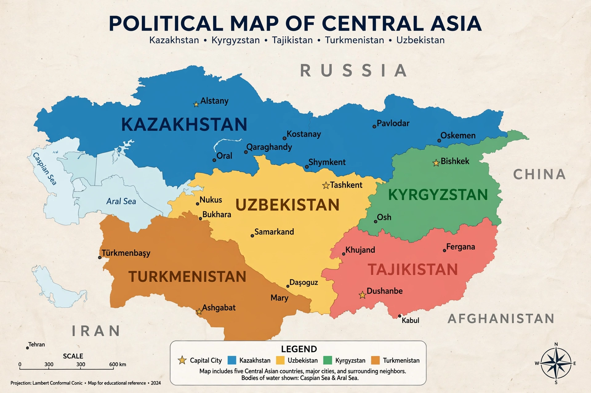

| Central Asia | |
|---|---|
 | |
| Area | About 4,000,000 km² |
| Population | About 75–80 million |
| Countries | Kazakhstan, Kyrgyzstan, Tajikistan, Turkmenistan, Uzbekistan (broader definitions add Afghanistan, Mongolia, and parts of China, Russia, Iran and Pakistan) |
| Largest cities | Tashkent, Almaty, Astana, Bishkek, Dushanbe, Ashgabat |
| Languages | Turkic languages (Kazakh, Kyrgyz, Uzbek, Turkmen), Tajik (Persian), Russian |
Central Asia is a region of Asia consisting of the five former Soviet republics of Kazakhstan, Kyrgyzstan, Tajikistan, Turkmenistan, and Uzbekistan. It is bordered by Russia to the north, China to the east, Iran and Afghanistan to the south, and the Caspian Sea to the west. Broader definitions, such as UNESCO's, extend the region to include Afghanistan, Mongolia, and adjacent parts of China and Siberia. The region spans vast steppes, deserts such as the Karakum and Kyzylkum, and high mountain ranges including the Tian Shan and the Pamirs — the "Roof of the World".
Central Asia is largely landlocked and arid. Its great rivers, the Amu Darya (Oxus) and Syr Darya (Jaxartes), historically flowed into the Aral Sea; Soviet-era irrigation diversion for cotton caused the Aral Sea to shrink catastrophically from the 1960s, one of the world's worst environmental disasters, though partial recovery has occurred in the North Aral Sea. The Caspian Sea, the world's largest inland body of water, forms the western boundary of Kazakhstan and Turkmenistan. The climate is strongly continental, with hot summers and cold winters.
The region was home to ancient Iranian-speaking peoples such as the Sogdians and Bactrians, and to the oasis cities of Samarkand and Bukhara, which flourished as hubs of the Silk Road linking China, Persia, and Europe. Alexander the Great campaigned here in the 4th century BCE. Arab armies brought Islam in the 7th–8th centuries. In 1220–21 the Mongol invasions of Genghis Khan devastated the cities; a century later Timur (Tamerlane) made Samarkand the capital of a vast empire and a centre of art and astronomy under his descendant Ulugh Beg.
In the 19th century the Russian Empire conquered the khanates of Khiva, Bukhara, and Kokand in the course of the "Great Game" rivalry with Britain. After the Russian Revolution, the region was reorganized into Soviet republics along ethnic lines in the 1920s–30s. Soviet rule brought industrialization, mass literacy, and cotton monoculture, but also collectivization famines, political purges, and nuclear testing at Semipalatinsk in Kazakhstan.
The five republics became independent with the dissolution of the USSR in 1991. Post-Soviet Central Asia has been shaped by authoritarian governments, hydrocarbon wealth in Kazakhstan and Turkmenistan, water and border disputes, labour migration to Russia, and growing engagement with China through the Belt and Road Initiative. The states cooperate in bodies such as the Shanghai Cooperation Organisation.
The population is predominantly Turkic-speaking and Muslim, with significant Russian and other minorities. Nomadic traditions of the Kazakh, Kyrgyz, and Turkmen steppe coexist with the sedentary urban cultures of Uzbekistan and Tajikistan. The region is famed for its Islamic architecture — the Registan in Samarkand, the Kalyan minaret in Bukhara — as well as felt yurts, eagle hunting, and epic poetry such as the Kyrgyz Manas.
Kazakhstan is the region's largest economy, rich in oil, gas, uranium, and metals; Turkmenistan holds some of the world's largest natural gas reserves. Uzbekistan is a major cotton and gold producer, while Kyrgyzstan and Tajikistan depend heavily on remittances and hydroelectricity. The region remains a key transit corridor between China and Europe.
This article is a recreation from memory in the style of Wikipedia.